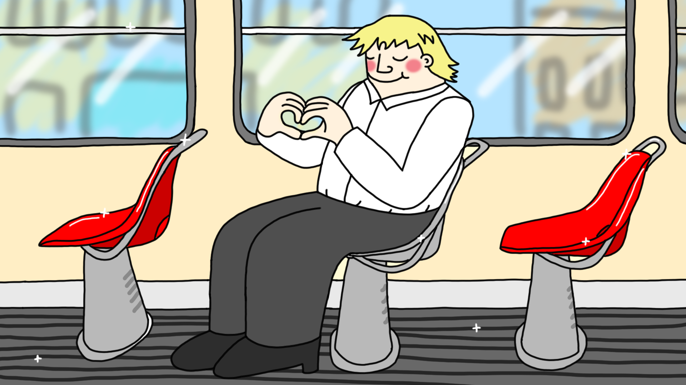

About me
Petra Mikolášová (*1998, Prague) is currently pursuing an MA in Animation at MOME in Budapest. Prior to this, she completed a second bachelor’s degree in Animation at UMPRUM in Prague, graduating in 2024.
She also holds a bachelor’s degree in Industrial Design from the Czech Technical University, which she earned in 2020.
In addition to her academic work, she founded Vysílač, a socio-political discussion podcast. Outside of her studies, she enjoys camping with friends, gardening, watching films, and reflecting on pop culture.
My works
zkouším dát break do textu
teď by to mělo být na další řádce
The best tram ever (2023)
The legendary journey

Illustrations and graphics


Illustrations for the Czech Scout

Contact
If you'd like to get in touch, feel free to reach out via email at mikolaspetra@gmail.com or connect with me on Instagram.